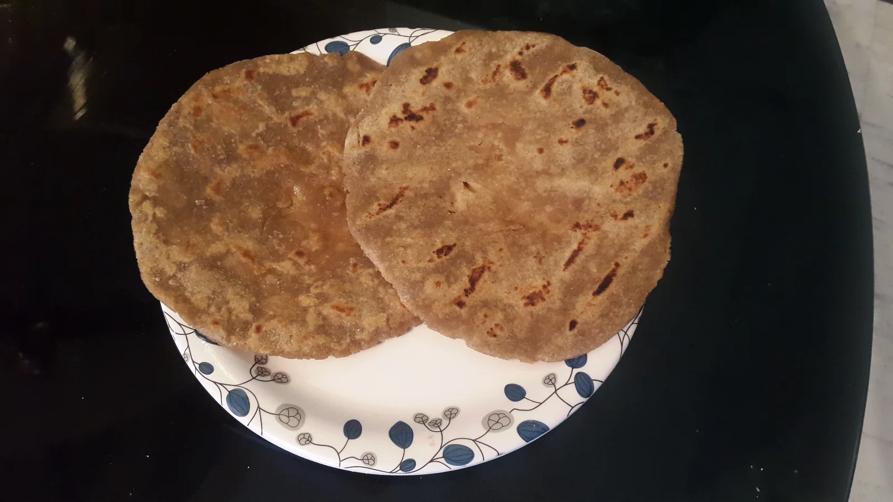
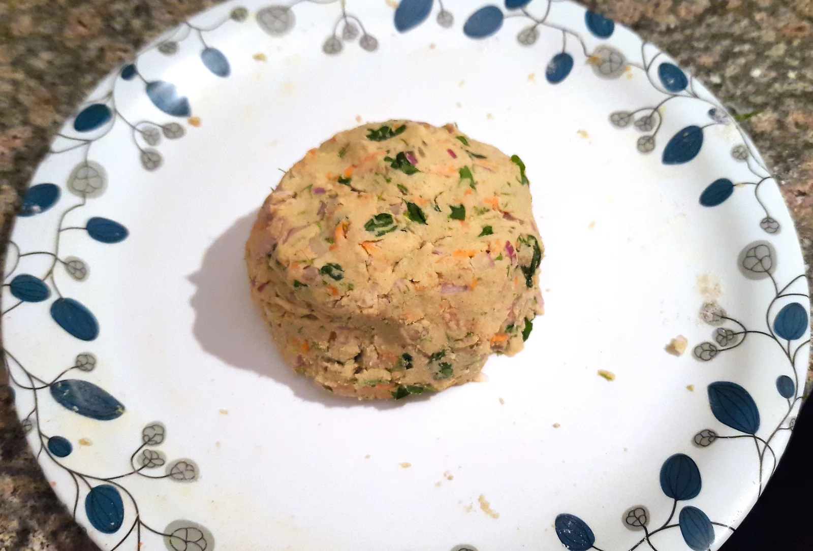
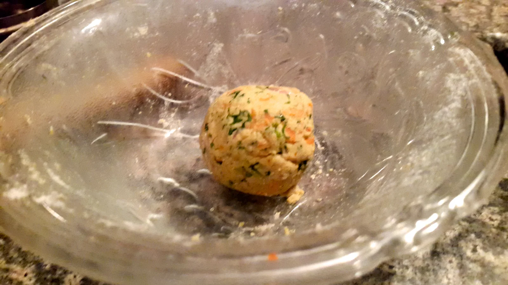
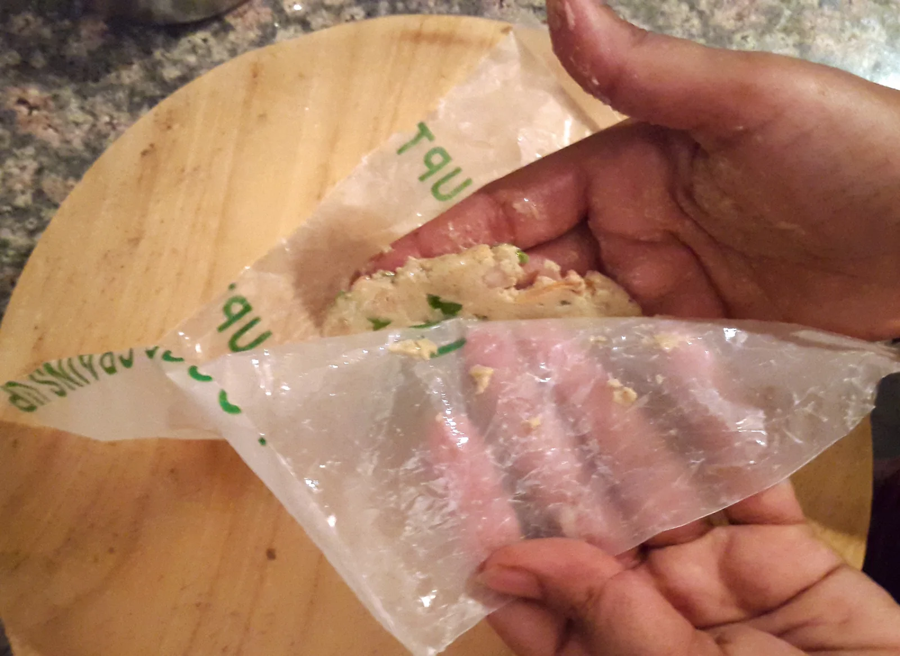
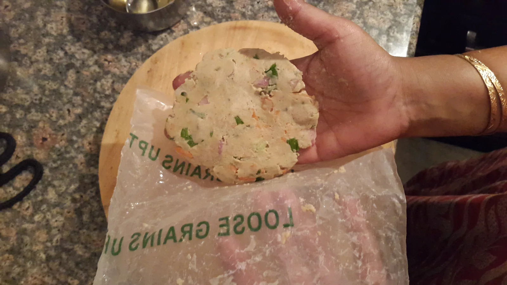
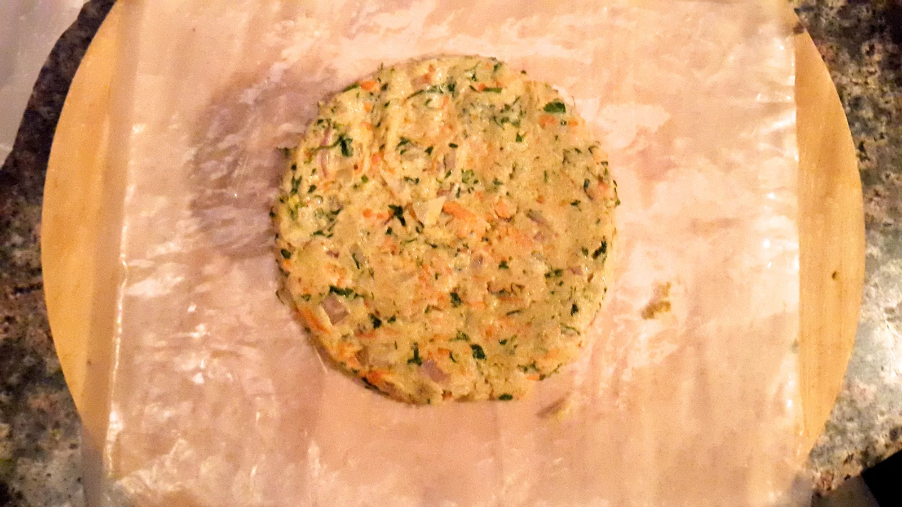
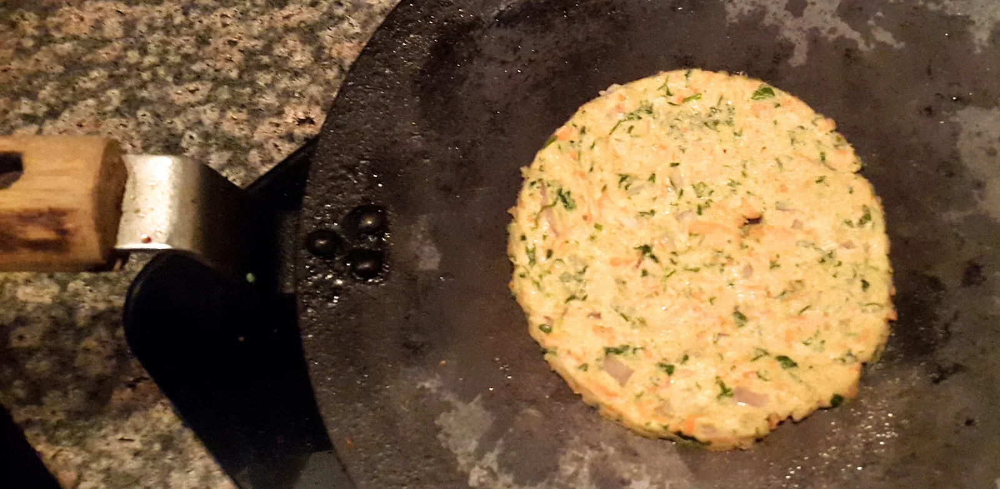

ROTi with
Millet Zone's
'Siri Dhanya' millet
KODO MILLET ROTI (Arka)
Roti making : Use 1 millet flour at a time. Mixing many millet flours(the so called 'Multi grain Atta' principle) is not useful. Roasting Rotis dry like Pulka or with Ghee/home made butter or Organic cold pressed oils is most preferred.
Method 1: Take Any Millet Flour 80% with Urad dal Flour 20%.
Make Urad dal (Blackgram flour) BROTH or slightly thick solution first with sufficient water, on stove.
Add salt. After the broth boils and the gummy texture is seen in broth, add Millet Flour and maintain low heat for 2 minutes, cool it, knead it, make dough.
Rest the dough for 1 to 3 hours by covering with wet cloth and then make Rotis.
Roast the rotis with or with out oil/Ghee/butter.
Method 2: Take vegetables like Palak, Carrot, Onion, Beet, Coriander, onion, Dil etc and mince them. Add a little salt and leave the mixture for 10 minutes. The veggies release water. This water is sufficient to mix the dough with Millet flour. or you may add water or curd while mixing flour.
Adding yeast is an option.. Rest the dough covered with wet cloth for 1-3 hours. But you can make only smaller, palm size - slightly thick Rotis.
Method 3 : Use Steam cooked Pumpkin flesh with Millet flour or even over ripe Banana flesh with flour. Other procedures same.
Method 4 : If you know how to make Jowar/Sorghum Rotis with hot water, use similar procedures to make Roti with Siridhanya flour. Resting the dough for 1-3 hours covered with wet cloth is necessary before making Rotis.
visit Youtube.com and research more recipes for Roti making, if you are still in doubt. Skill comes through practice and experimentation.Bring Home all the 5 Ancient Millets and Benefit from them !
Little millet fragrant rotis
Ingredients :
Almost same as above. Just replace the above Millet Flour/Aatta with Little Millet Flour. Procedure is same....Except.... Add 2 spoons of curd/Yoghurt, any Green leafy vegetable like Palak (Spinach) or Methi (Fenugreek); finely chopped carrot, Coriander/cilantro or Dil leaf(saunf leaf) & few Fennel seeds(saunf) to the dough and rest it for 30 minutes. While rolling Rotis, use a smooth base with a thin coat of oil and use your fingers/rolling pin to make a thick Roti. You may use a circular vessel to cut and get a perfect circle too. Add Ghee or Oil or none while roasting -as per your choice. (See the pics below)







Source: Original Millets Zone · Millet roti
Content captured 25 October 2026. Reorganized for reading; purchase-related material excluded.
Content captured 25 October 2026. Reorganized for reading; purchase-related material excluded.